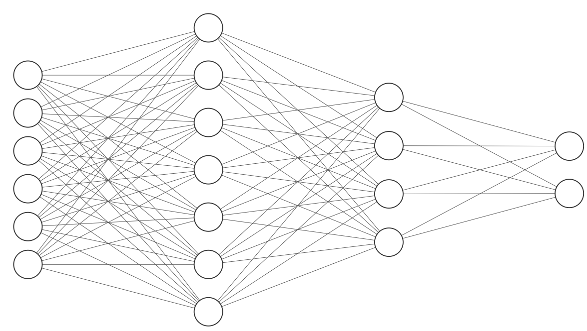

1. ClassifierA classifier is a machine that helps us in decision making:ClassifierTestdata-pointDecisionYesNoWe will study three classifiers today:• K-NN• Decision trees• Neural networks2. K-NNK-NN algorithm stands for k nearest neighbors. To make a decision on a test-point, we consult those who are closest (in terms of distance) to this point and select the class which has the most number of votes. For example, consider the dataset:The black-point is the test-point. If k=3, the three points nearest to the black point are:Since two of them are red and one is green, the predicted label for the test-point is red. Note that in general, we have to compute the distance of the test-point to all points in the dataset before we can find out which points are nearest. It is simple in 2 dimensions because we can visualize (meaning, draw graphs), but as we go to higher dimensions, we cannot rely on visualizations.2.1. Question-1What is the predicted label if k=5?2.2. Question-2What is the distance between the black-point and the point farthest to it?2.3. Question-3What is the predicted label if k=8 is used in the above graph?3. Decision treesA decision tree allows you to ask a sequence of questions on the data:• A tree is made up of several nodes.• Nodes are of two types:– question nodes– leaf nodes• Each question-node is of the form feature<value. For example, x1<3.• Nodes that do not have questions are called leaves. Leaves are labeled either red or green.• The top-most node is the root node.Consider the tree given below:x2<1x2<3x1<5RedGreenx1<8RedGreenRedN1N2N3N4N5N6N7N8N9NoNoNoNoYesYesYesYesThe root node for this tree is N1.3.1. Question-4How many leaves does the above tree have?To make a decision, we have to "traverse" the tree. Traversing the tree is like climbing down the tree. It amounts to asking a sequence of questions. We start from the root and keep following the branches. For example, if we want to predict the label for (0,0):x2<1x2<3x1<5RedGreenx1<8RedGreenRedNoNoNoNoYesYesYesYesThe predicted label is red.3.2. Question-5Find the predicted label for the point (0,5) given the above tree.3.3. Question-6Find the predicted label for the point (6,1) given the above tree.The depth of a tree is the maximum number of questions that need to be asked before we can arrive at a decision. For this tree, the depth is 3. The path is traced here:x2<1x2<3x1<5RedGreenx1<8RedGreenRedNoNoNoNoYesYesYesYes3.4. Question-7What is the depth of the tree given below?x2<1x2<3x1<5RedGreenx1<8RedRedNoNoNoNoYesYesYesYesx2<2RedGreenYesNo4. Neural networksA neural network is a classifier made up of a number of layers:• The circles that you see in the graph are called artificial neurons. Neurons are arranged in layers.• A network has three kinds of layers:– The left-most layer is called the input layer.– The right-most layer is called the output layer.– The rest are called hidden layers.• To make a decision, we pass the input at the left and obtain the output at the right. This is termed a forward pass• The neurons across layers are connected by edges. Each edge has a weight associated with it.• The weight denotes the strength of an edge.

4.1. Question-8How many hidden layers does this network have?4.2. Question-9How many weights does this network have between the input layer and the first hidden layer?4.3. Question-10What is the total number of weights in this network?